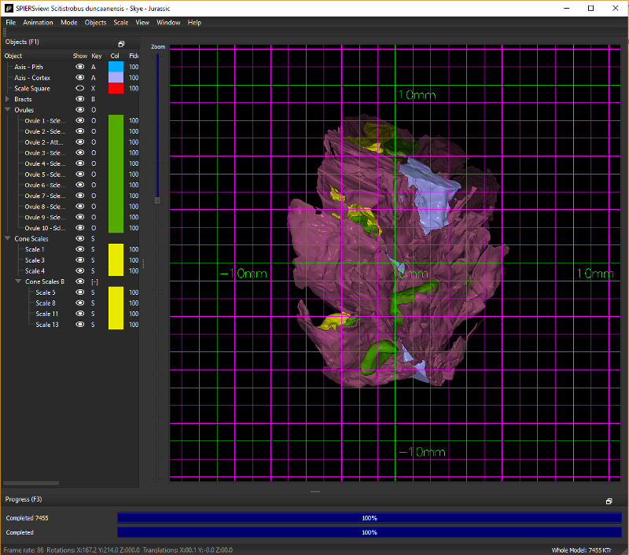

15. Scale and Measurement¶
15.1. Scale Grid¶
Select Show Scale Grid on the Scale menu, or Ctrl+K, to overlay a grid on the specimen; the grid scales in resolution as the user zooms in and out. As perspective effects can complicate measurement it is normal to use this grid in orthographic mode. In SPIERSview 4 or later, the grid is only available in orthographic mode. Measurement in perspective modes is possible however, although the user will need to bear in mind the relative distances to the grid and to the model. To facilitate these judgements all portion of the model beyond the plane of the grid are partially greyed-out.
The scale grid will change the displayed measurement unit based on the current field of view and model scale. Units that can be shown are meters (m), centimeters (cm), millimeters (mm), and micrometer/micron (um). Major scale lines and text are displayed in bold. Note: the current field of view (FOV) is shown in the status bar at the bottom left of the SPIERSview program.
Scale grid settings can be found under the Scale > Scale Grid Settings… sub-menu. Options include: Show Minor Scale Lines, Show Minor Scale Values, Major Grid Colour…, Minor Grid Colour…, and Font Size…. Also under this sub-menu is the Reset Scale Grids to Defaults option.

Figure 6. The scale grid¶
Note that as of version 2.20 the older ‘Scale Ball’ system has been removed.
For files imported from SPIERSedit the internal scale should automatically be correct, assuming the pixels / mm and slices / mm values were set correctly at export time. If however the scale is not correct, the entire model can be rescaled (see below) as necessary.
15.2. Point-to-Point measurement¶
If your mouse has a middle button, you can click on an object to place a marker. Clicking a second time will create a second marker, with a measurement displayed showing the linear distance between the two markers. Markers are placed in 3D space, and will move with the object if it is rotated or repositioned.
To clear measurement markers, use ‘Remove Scale Markers’ from the Scale menu
15.3. Rescaling objects¶
The Scale menu has four commands that can be used to change the scale of either the whole model or, if Reposition Selected is ticked in the Mode menu, individual objects. These commands are Increase Size (+), Decrease Size (-), Rescale By…, and Reset Size. The first two increase or decrease size by a small increment. Rescale By… allows resizes of arbitrary amounts, input as a decimal factor (e.g. 0.5 is half size, 2.5 is 2 and a half times bigger, etc). Reset size undoes any scale changes.